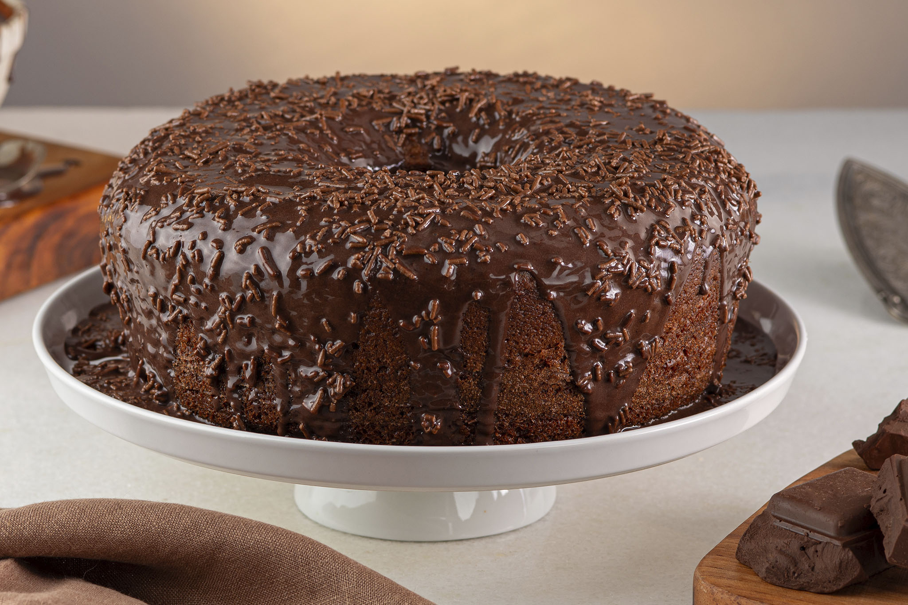

Bolo de chocolate
Um bolo simples, macio e perfeito para o café da tarde.
Ver receita
@mariazinha
Apaixonada por receitas caseiras, doces e momentos especiais na cozinha.

Um bolo simples, macio e perfeito para o café da tarde.
Ver receita
Receita clássica de bolo de cenoura com cobertura de chocolate.
Ver receita
Uma receita saborosa para reunir toda a família.
Ver receita
Uma opção prática e deliciosa para começar o dia.
Ver receita
Torta salgada cremosa e fácil de preparar.
Ver receita
Uma sobremesa clássica para qualquer ocasião.
Ver receita